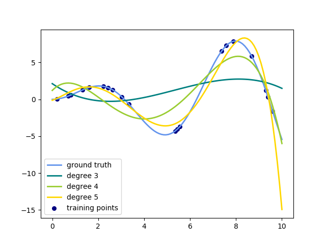

Note
Click here to download the full example code
多项式插值¶
这个例子演示了如何用岭回归用n_degree次多项式逼近函数。具体而言，从 n_samples 个1d点出发， 建立范德蒙矩阵(Vandermonde matrix)就足够了，它的shape是 n_samples x n_degree+1，其形式如下:
- [[1, x_1, x_1 ** 2, x_1 ** 3, …],
- [1, x_2, x_2 ** 2, x_2 ** 3, …], …]
直观地说，这个矩阵可以解释为伪特征矩阵(数据点被提高到某个次幂)。 该矩阵类似于(但不同于)由多项式核诱导出的矩阵。
此示例显示，您可以使用线性模型进行非线性回归，使用管道添加非线性特征。 核方法扩展了这一思想，可以诱导出很高(甚至无限)维数的特征空间。
print(__doc__)
# Author: Mathieu Blondel
# Jake Vanderplas
# License: BSD 3 clause
# 翻译者： www.studyai.com/antares
import numpy as np
import matplotlib.pyplot as plt
from sklearn.linear_model import Ridge
from sklearn.preprocessing import PolynomialFeatures
from sklearn.pipeline import make_pipeline
def f(x):
""" 要通过多项式插值逼近的函数"""
return x * np.sin(x)
# 产生 x 轴上的坐标点用于绘图
x_plot = np.linspace(0, 10, 100)
# 产生数据点并保留一个子集
x = np.linspace(0, 10, 100)
rng = np.random.RandomState(0)
rng.shuffle(x)
# 在[0,10]的区间内随机挑选20个点
x = np.sort(x[:20])
y = f(x)
# 创建这些数组的矩阵版本
X = x[:, np.newaxis]
X_plot = x_plot[:, np.newaxis]
colors = ['teal', 'yellowgreen', 'gold']
lw = 2
plt.plot(x_plot, f(x_plot), color='cornflowerblue', linewidth=lw,
label="ground truth")
plt.scatter(x, y, color='navy', s=30, marker='o', label="training points")
for count, degree in enumerate([3, 4, 5]):
model = make_pipeline(PolynomialFeatures(degree), Ridge())
model.fit(X, y)
y_plot = model.predict(X_plot)
plt.plot(x_plot, y_plot, color=colors[count], linewidth=lw,
label="degree %d" % degree)
plt.legend(loc='lower left')
plt.show()
Total running time of the script: ( 0 minutes 0.040 seconds)